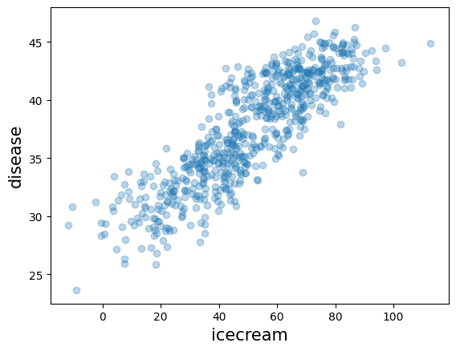
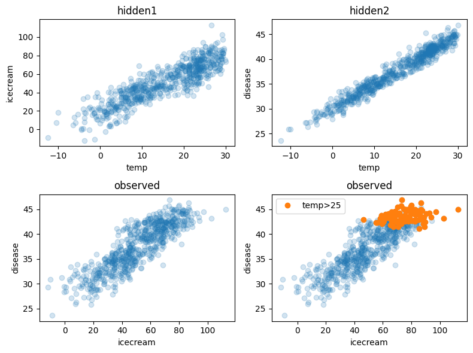
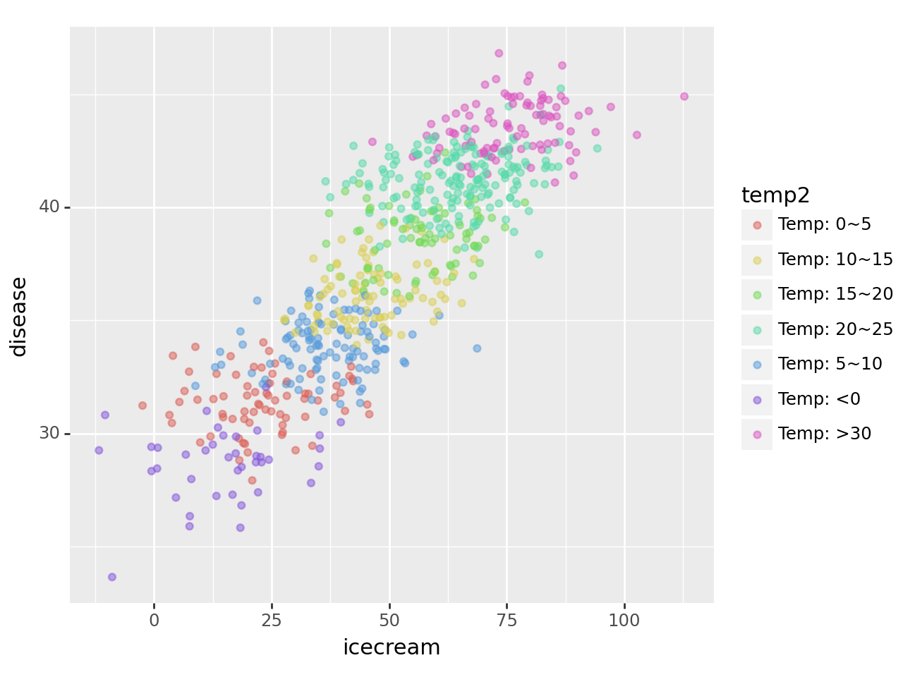
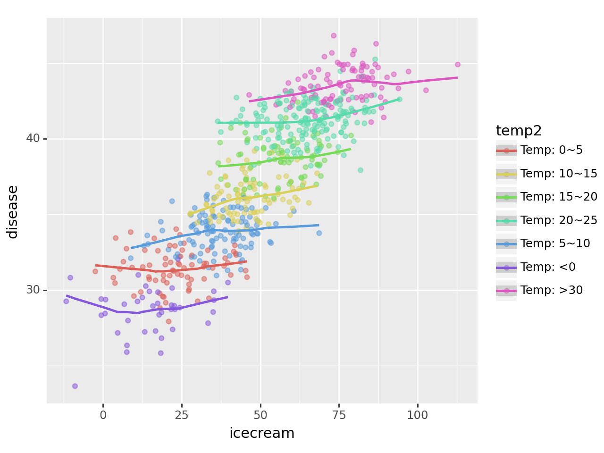

Lesson 16: 아이스크림을 많이 먹으면 걸리는 병 (draft)

imports
아이스크림을 많이 먹으면 걸리는 병 (1)
- ref- 데이터 과학자의 사고법: 더 나은 선택을 위한 통계학적 통찰의 힘
- 구매할만한 책입니다
- 내용요약
- 여름 \(\to\) 수영장 \(\to\) 소아마비
- 여름 \(\to\) 아이스크림
- 아이스크림과 소아마비는 상관관계가 높다: 아이스크림 성분중에서 소아마비를 유발하는 유해물질이 있을 것이다 (?)
- 아래와 같이 모형을 간단하게 하자.
- 온도 \(\to\) 소아마비
- 온도 \(\to\) 아이스크림
Toy exam
- 교재의 예제상황은 예를들면 아래와 같다.
(숨은진짜상황1)
\[\text{아이스크림 판매량} = 20 + 2 \times \text{온도} + \text{오차}\]
- 온도와 아이스크림 판매량의 산점도
(숨은진짜상황2)
\[\text{소아마비 반응수치} = 30 + 0.5 \times \text{온도} + \text{오차}\] - 좌변은 소아마비임을 나타내는 어떠한 반응수치라고 생각하자.
- 온도와 소아마비의 산점도
(우리가 데이터로부터 관측한 상황)
- 아이스크림과 질병의 산점도를 그려보자.
- 양의 상관관계에 있다.
- 아이스크림 중 어떠한 물질이 소아마비를 일으키는것이 분명하므로 (인과성이 분명해보이니까) 아래와 같은 모형을 세우자. <– 여기서부터 틀렸음
\[{\tt disease}_i =\beta_0 +\beta_1 {\tt icecream}_i +\epsilon_i,\quad \textbf{for} ~~ i=1,2,\dots, 12\]
- 적절한 \(\beta_0\)와 \(\beta_1\)을 추정하면 우리는 아이스크림과 소아마비의 관계를 알 수 있다. <– 틀린주장
- 틀린 모형
- 도데체 우리가 뭘 잘못했는가?
- 두 변수 사이에 상관관계가 있어도 실제 원인은 다른 변수에 숨겨져 있는 경우가 많다.
(ex1)
- 온도 \(\to\) 익사
- 온도 \(\to\) 아이스크림
- 아이스크림과 익사자도 양의 상관관계에 있을것이다.
- 아이스크림을 먹이면 물에 빠져 죽는다 \(\to\) 틀린주장
- 사실 기온이 숨겨진 원인이다. 기온이 증가하면 아이스크림 판매량도 증가하고 폭염때문에 익사사고율도 높아지는 구조이다.
(ex2)
- 인구수 \(\to\) 교회
- 인구수 \(\to\) 범죄건수
- 지역별 교회와 범죄건수를 살펴보면 상관관계가 높게 나올것임
- 교회를 지으면 범죄건수도 증가한다? \(\to\) 틀린주장
- 사실 인구가 숨겨진 요인임
- ex2, ex1에 대하여 바른 분석을 하려면?
- ex2: 인구가 비슷한 도시끼리 묶어서 비교해보면 교회와 범죄의 건수는 양의 상관관계에 있지 않을것임
- ex1: 온도가 비슷한 그룹끼리 묶어보자.
- 올바른 분석: 온도가 비슷한 그룹끼리 묶어서 그려보자. \(\to\) 상관계수가 줄어들 것이다.
- 진짜로 선형관계가 약해졌다..
아이스크림을 많이 먹으면 걸리는 병 (2)
자료생성: 좀 더 그럴듯한 자료 (만들기)
- 지난 시간의 toy example은 데이터가 너무 작아서 억지스러움 \(\to\) 기상자료개방포털, 회원가입해야 자료받을 수 있음.
| 지점번호 | 지점명 | 일시 | 평균기온(℃) | 최고기온(℃) | 최고기온시각 | 최저기온(℃) | |
|---|---|---|---|---|---|---|---|
| 0 | 146 | 전주 | 2020-01-01 | -0.5 | 4.3 | 15:09 | -6.4 |
| 1 | 146 | 전주 | 2020-01-02 | 1.4 | 6.5 | 14:12 | -3.0 |
| 2 | 146 | 전주 | 2020-01-03 | 2.6 | 7.6 | 13:32 | -0.5 |
| 3 | 146 | 전주 | 2020-01-04 | 2.0 | 7.7 | 13:51 | -2.6 |
| 4 | 146 | 전주 | 2020-01-05 | 2.5 | 8.6 | 14:05 | -3.2 |
| ... | ... | ... | ... | ... | ... | ... | ... |
| 651 | 146 | 전주 | 2021-10-13 | 19.9 | 25.5 | 14:29 | 15.6 |
| 652 | 146 | 전주 | 2021-10-14 | 20.4 | 25.5 | 13:36 | 17.0 |
| 653 | 146 | 전주 | 2021-10-15 | 18.3 | 22.0 | 13:47 | 15.7 |
| 654 | 146 | 전주 | 2021-10-16 | 12.8 | 17.4 | 0:01 | 6.5 |
| 655 | 146 | 전주 | 2021-10-17 | 6.7 | 12.4 | 15:18 | 2.2 |
656 rows × 7 columns
- 평균기온만 선택
# 숨은진짜상황1: 온도 \(\to\) 아이스크림 판매량
- 아래와 같은 관계가 있다고 하자.
\[\text{아이스크림 판매량} = 20 + 2 \times \text{온도} + \text{오차}\]
# 숨은진짜상황2: 온도 \(\to\) 소아마비 반응수치
- 아래와 같은 관계가 있다고 하자.
\[\text{소아마비 반응수치} = 30 + 0.5 \times \text{온도} + \epsilon\]
# 우리가 관측한 상황 (온도는 은닉되어있음)
plt.plot(icecream,disease,'o',alpha=0.3)
plt.xlabel("icecream",size=15)
plt.ylabel("disease",size=15)Text(0, 0.5, 'disease')
- 0.86정도..
직관: 여름만 뽑아서 plot 해보자.
- temp>25 (여름으로 간주) 인 관측치만 플랏
- 전체적인 산점도
fig , ((ax1,ax2), (ax3,ax4)) = plt.subplots(2,2,figsize=(8,6))
ax1.plot(temp,icecream,'o',alpha=0.2); ax1.set_xlabel('temp'); ax1.set_ylabel('icecream'); ax1.set_title("hidden1")
ax2.plot(temp,disease,'o',alpha=0.2); ax2.set_xlabel('temp'); ax2.set_ylabel('disease'); ax2.set_title("hidden2")
ax3.plot(icecream,disease,'o',alpha=0.2); ax3.set_xlabel('icecream'); ax3.set_ylabel('disease'); ax3.set_title("observed")
ax4.plot(icecream,disease,'o',alpha=0.2); ax4.set_xlabel('icecream'); ax4.set_ylabel('disease'); ax4.set_title("observed")
ax4.plot(icecream[temp>25],disease[temp>25],'o',label='temp>25')
ax4.legend()
fig.tight_layout()
ggplot: 온도구간을 세분화 하여 시각화
- 목표: 모든 온도구간에 대하여 각각 색을 다르게 하여 그려보자.
- 사실 지금 변수는 온도, 아이스크림판매량, 소아마비
- 온도가 유사한 지역을 색으로 묶으면 3차원 플랏이 가능함
# df로 자료정리
- 일단 데이터 프레임을 정리하자.
| temp | icecream | disease | |
|---|---|---|---|
| 0 | -0.5 | 35.243454 | 29.333242 |
| 1 | 1.4 | 16.682436 | 30.643733 |
| 2 | 2.6 | 19.918282 | 29.163804 |
| 3 | 2.0 | 13.270314 | 32.640271 |
| 4 | 2.5 | 33.654076 | 29.456564 |
| ... | ... | ... | ... |
| 651 | 19.9 | 68.839992 | 39.633906 |
| 652 | 20.4 | 76.554679 | 38.920443 |
| 653 | 18.3 | 68.666079 | 39.882650 |
| 654 | 12.8 | 42.771364 | 36.613159 |
| 655 | 6.7 | 30.736731 | 34.902513 |
656 rows × 3 columns
# 구간세분화
- 온도를 카테고리화 하자 \(\to\) 적당한 구긴을 설정하기 위해서 히스토그램을 그려보자.
(array([ 3., 9., 29., 60., 92., 86., 65., 93., 139., 80.]),
array([-12.4 , -8.16, -3.92, 0.32, 4.56, 8.8 , 13.04, 17.28,
21.52, 25.76, 30. ]),
<BarContainer object of 10 artists>)- 구간은 5정도로 하면 적당할 것 같다.
| temp | icecream | disease | temp2 | |
|---|---|---|---|---|
| 0 | -0.5 | 35.243454 | 29.333242 | Temp: <0 |
| 1 | 1.4 | 16.682436 | 30.643733 | Temp: 0~5 |
| 2 | 2.6 | 19.918282 | 29.163804 | Temp: 0~5 |
| 3 | 2.0 | 13.270314 | 32.640271 | Temp: 0~5 |
| 4 | 2.5 | 33.654076 | 29.456564 | Temp: 0~5 |
| ... | ... | ... | ... | ... |
| 651 | 19.9 | 68.839992 | 39.633906 | Temp: 15~20 |
| 652 | 20.4 | 76.554679 | 38.920443 | Temp: 20~25 |
| 653 | 18.3 | 68.666079 | 39.882650 | Temp: 15~20 |
| 654 | 12.8 | 42.771364 | 36.613159 | Temp: 10~15 |
| 655 | 6.7 | 30.736731 | 34.902513 | Temp: 5~10 |
656 rows × 4 columns
# ggplot
- 온도를 색으로 구분하면
fig = ggplot(data=df.assign(temp2 = list(map(cut,df.temp))))
p1 = geom_point(aes(x='icecream',y='disease',colour='temp2'),alpha=0.5)
fig + p1
- 추세선을 추가하면
/home/cgb2/anaconda3/envs/py310/lib/python3.10/site-packages/plotnine/stats/smoothers.py:330: PlotnineWarning: Confidence intervals are not yet implemented for lowess smoothings.
/home/cgb2/anaconda3/envs/py310/lib/python3.10/site-packages/plotnine/stats/smoothers.py:330: PlotnineWarning: Confidence intervals are not yet implemented for lowess smoothings.
/home/cgb2/anaconda3/envs/py310/lib/python3.10/site-packages/plotnine/stats/smoothers.py:330: PlotnineWarning: Confidence intervals are not yet implemented for lowess smoothings.
/home/cgb2/anaconda3/envs/py310/lib/python3.10/site-packages/plotnine/stats/smoothers.py:330: PlotnineWarning: Confidence intervals are not yet implemented for lowess smoothings.
/home/cgb2/anaconda3/envs/py310/lib/python3.10/site-packages/plotnine/stats/smoothers.py:330: PlotnineWarning: Confidence intervals are not yet implemented for lowess smoothings.
/home/cgb2/anaconda3/envs/py310/lib/python3.10/site-packages/plotnine/stats/smoothers.py:330: PlotnineWarning: Confidence intervals are not yet implemented for lowess smoothings.
/home/cgb2/anaconda3/envs/py310/lib/python3.10/site-packages/plotnine/stats/smoothers.py:330: PlotnineWarning: Confidence intervals are not yet implemented for lowess smoothings.
- 각 온도별로 추세선은 거의 기울기가 0이다. \(\to\) 온도가 비슷한 구간별로 묶어서 보니까 상관관계가 없다는 거!
- 아이스크림 판매량과 소아마비의 corr은 유의미해보이지만, 온도를 통제하였을 경우 아이스크림 판매량과 소아마비의 partial corr은 유의미해보이지 않음.
# 해석
- 해피앤딩: 온도를 통제하니까 아이스크림과 질병은 관련이 없어보인다. \(\to\) 아이스크림을 먹으면 소아마비를 유발한다는 이상한 결론이 나올뻔 했지만 우리는 온도라는 흑막을 잘 찾았고 결과적으로 “온도->아이스크림판매량,소아마비” 이라는 합리적인 진리를 얻을 수 있었다.
- 온도와 같은 변수를 은닉변수라고 한다.
- 또 다른 흑막? 고려할 흑막이 온도뿐이라는 보장이 어디있지? 사실 흑막2, 흑막3이 있어서 그런 흑막들을 고려하다보니까 아이스크림과 소아마비사이의 상관관계가 다시 보이면 어떡하지?
- 이러한 이유 때문에 상관계수로 인과성을 유추하는건 사실상 불가능.
- 그런데 이론적으로는 “세상의 모든 은닉변수를 통제하였을 경우에도 corr(X,Y)의 값이 1에 가깝다면 그때는 인과성이 있다고 봐도 무방함, (물론 이 경우에도 무엇이 원인인지는 통계적으로 따지는것이 불가)” 이라고 주장할 수 있다. 즉 모든 흑막을 제거한다면 “상관성=인과성”이다.
- 실험계획법, 인과추론: 세상의 모든 흑막을 제거하는건 상식적으로 불가능
- 피셔의주장(실험계획법): 그런데 실험계획을 잘하면 흑막을 제거한 효과가 있음 (무작위로 사람뽑아서 담배를 피우게 한다든가)
- 인과추론: 실험계획이 사실상 불가능한 경우가 있음 \(\to\) 모인 데이터에서 최대한 흑막2,3,4,.. 등이 비슷한 그룹끼리 “매칭”을 시킨다!